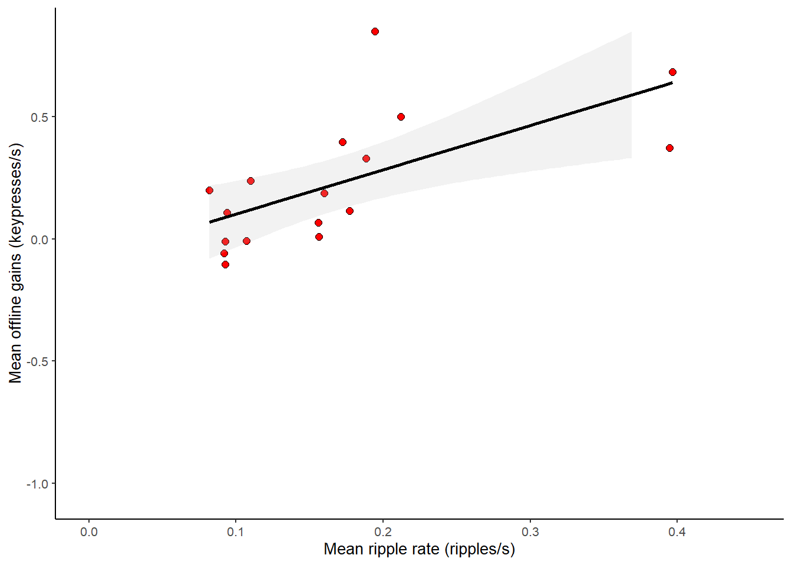
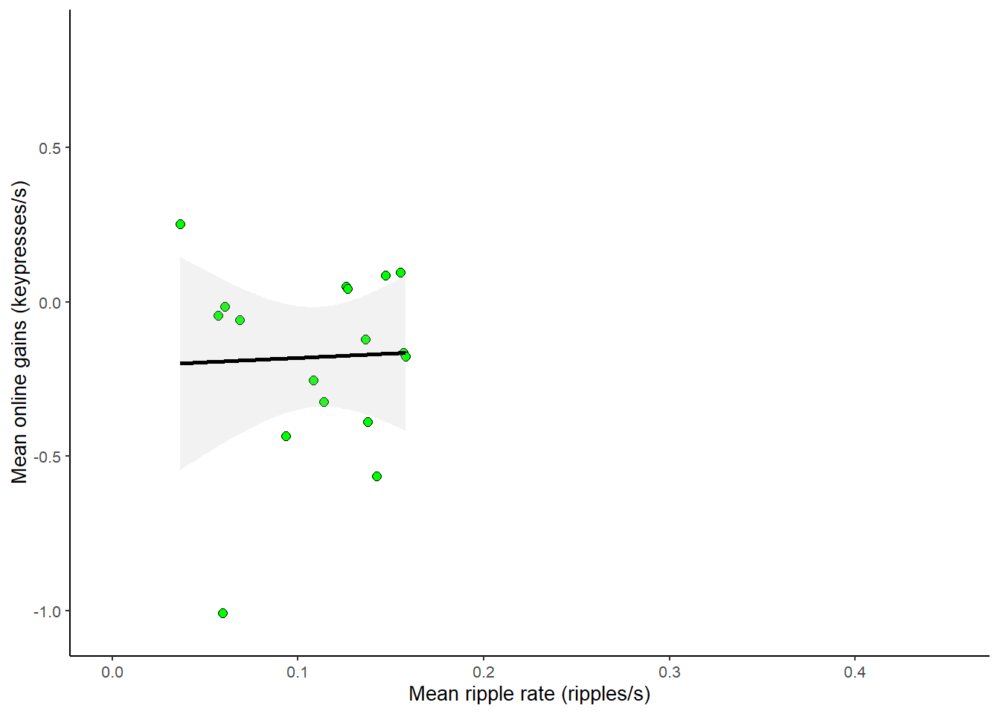
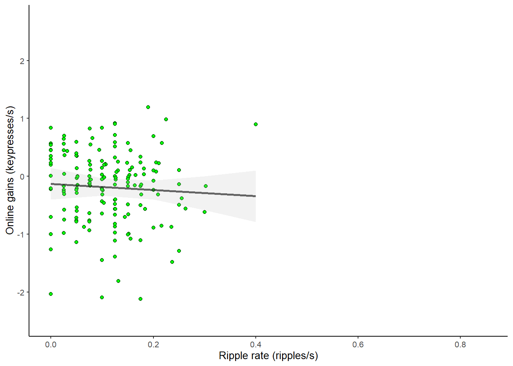
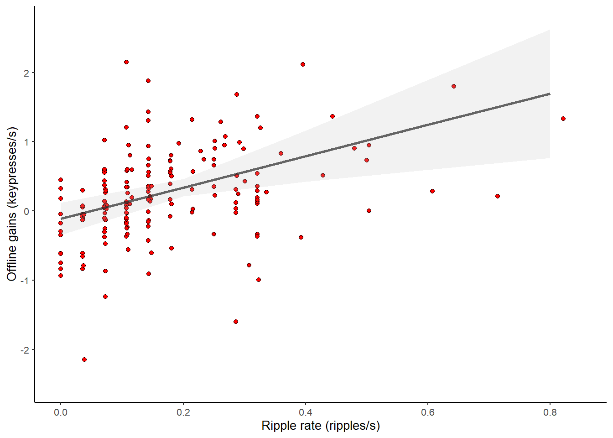
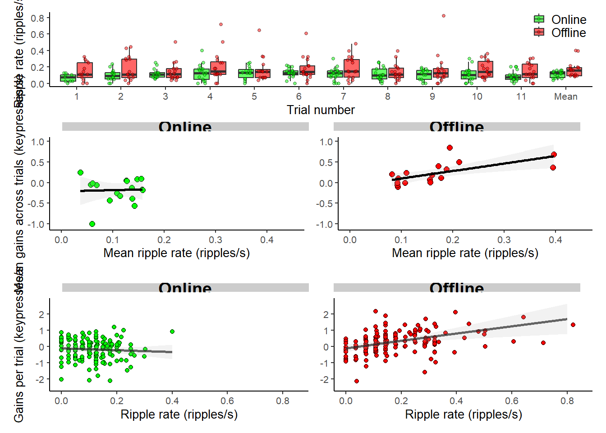
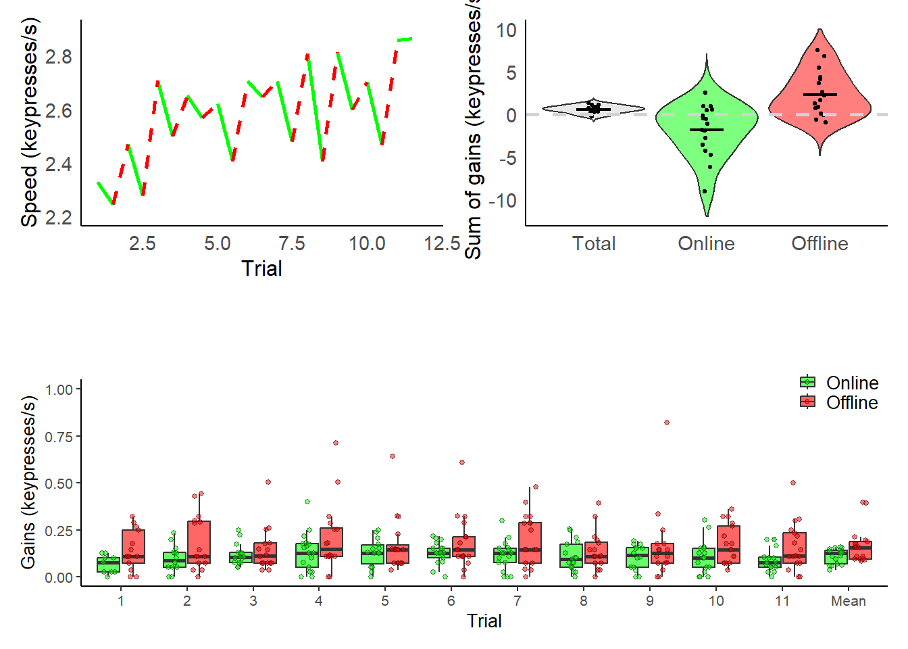

# Load packages
library(parameters)
library(effectsize)
library(ggplot2)
library(dplyr)
Attaching package: 'dplyr'The following objects are masked from 'package:stats':
filter, lagThe following objects are masked from 'package:base':
intersect, setdiff, setequal, unionlibrary(patchwork)
library(merDeriv)Loading required package: lme4Loading required package: MatrixLoading required package: nonnest2This is nonnest2 0.5-8.
nonnest2 has not been tested with all combinations of supported model classes.Loading required package: sandwichLoading required package: lavaanThis is lavaan 0.6-19
lavaan is FREE software! Please report any bugs.library(sjPlot) #for plotting lmer and glmer mods
library(svglite)
# helper code/functions
report_1sample_ttest <- function(x) {
ttest <- t.test(x)
cat(sprintf("mean +/- sd = %.2f +/- %.2f, t(%d) = %.2f, p = %.3f, d = %.2f, 95%% CI: %.2f—%.2f\n",
mean(x, na.rm = TRUE),
sd(x, na.rm = TRUE),
round(ttest$parameter),
ttest$statistic,
ttest$p.value,
mean(x, na.rm = TRUE) / sd(x, na.rm = TRUE),
ttest$conf.int[1],
ttest$conf.int[2]))
}
report_paired_ttest <- function(x, y) {
ttest <- t.test(x, y, paired = TRUE)
diff <- x - y
cat(sprintf("mean +/- sd = %.2f +/- %.2f, t(%d) = %.2f, p = %.3f, d = %.2f, 95%% CI: %.2f—%.2f\n",
mean(diff, na.rm = TRUE),
sd(diff, na.rm = TRUE),
round(ttest$parameter),
ttest$statistic,
ttest$p.value,
mean(diff, na.rm = TRUE) / sd(diff, na.rm = TRUE),
ttest$conf.int[1],
ttest$conf.int[2]))
}
report_correlation <- function(x, y) {
corr <- cor.test(x, y, use = "pairwise.complete.obs")
cat(sprintf("r(%d) = %.2f, p = %.3f, 95%% CI: %.2f—%.2f\n",
corr$parameter,
corr$estimate,
corr$p.value,
corr$conf.int[1],
corr$conf.int[2]))
}
report_lmer_effect <- function(model, term) {
# Load necessary libraries
# Get model parameters with Kenward-Roger p-values
params <- model_parameters(model, ci_method = "wald", df_method = "kenward")
# Get eta squared values
eta_sq <- eta_squared(model, partial = TRUE)
# Extract the values for the specified term
row <- params[params$Parameter == term, ]
eta_val <- eta_sq[eta_sq$Parameter == term, "Eta2_partial"]
# Print results
cat(sprintf("β = %.2f, p = %.4f, 95%% CI: %.2f—%.2f, η² = %.3f\n",
row$Coefficient, row$p, row$CI_low, row$CI_high, eta_val))
}
# Load data
ripples_offline <- read.csv('offripples_subs.csv',sep = ',')
ripples_online <- read.csv('onripples_subs.csv',sep = ',')
gains_offline <- read.csv('offgains_subs.csv',sep = ',')
gains_online <- read.csv('ongains_subs.csv',sep = ',')
# Run a quick analysis
summary(ripples_offline) t1 t2 t3 t4
Min. :0.00000 Min. :0.00000 Min. :0.03571 Min. :0.0000
1st Qu.:0.03571 1st Qu.:0.07143 1st Qu.:0.07194 1st Qu.:0.1071
Median :0.10791 Median :0.14285 Median :0.11614 Median :0.1786
Mean :0.13590 Mean :0.18724 Mean :0.14715 Mean :0.2162
3rd Qu.:0.24999 3rd Qu.:0.29197 3rd Qu.:0.17857 3rd Qu.:0.2857
Max. :0.32142 Max. :0.44444 Max. :0.50358 Max. :0.7143
t5 t6 t7 t8
Min. :0.03571 Min. :0.0000 Min. :0.00000 Min. :0.00000
1st Qu.:0.07194 1st Qu.:0.1071 1st Qu.:0.07246 1st Qu.:0.07143
Median :0.14285 Median :0.1429 Median :0.14598 Median :0.10869
Mean :0.16803 Mean :0.1813 Mean :0.20139 Mean :0.13374
3rd Qu.:0.14815 3rd Qu.:0.2143 3rd Qu.:0.28776 3rd Qu.:0.18116
Max. :0.64283 Max. :0.6071 Max. :0.47971 Max. :0.39284
t9 t10 t11
Min. :0.0000 Min. :0.03780 Min. :0.00000
1st Qu.:0.0730 1st Qu.:0.07353 1st Qu.:0.07143
Median :0.1079 Median :0.14285 Median :0.11278
Mean :0.1611 Mean :0.17425 Mean :0.16141
3rd Qu.:0.1786 3rd Qu.:0.26924 3rd Qu.:0.23411
Max. :0.8214 Max. :0.35970 Max. :0.49998 # don't use ripples from any removed trials
ripples_offline[is.na(gains_offline)] = NaN
ripples_online[is.na(gains_online)] = NaN
subIDs = c('n1','n2','n3','n4','n5','n6','n7','n8','n9','n10','n11','n12','n13','n14','n15','n16','n17')
subvect_all = rep(subIDs, times = 11, each=1)
mean_offline_ripples = mean(rowMeans(ripples_offline,na.rm = TRUE)) #0.17
sd_offline_ripples = sd(rowMeans(ripples_offline,na.rm = TRUE)) #0.09
mean_online_ripples = mean(rowMeans(ripples_online,na.rm = TRUE)) #0.11
sd_online_ripples = sd(rowMeans(ripples_online,na.rm = TRUE)) #0.04
# calculate and report t-test results
report_1sample_ttest(rowSums(gains_offline,na.rm = TRUE))mean +/- sd = 2.32 +/- 2.60, t(16) = 3.68, p = 0.002, d = 0.89, 95% CI: 0.99—3.66report_1sample_ttest(rowSums(gains_online,na.rm = TRUE))mean +/- sd = -1.84 +/- 2.98, t(16) = -2.55, p = 0.021, d = -0.62, 95% CI: -3.37—-0.31report_1sample_ttest(rowSums(gains_offline,na.rm = TRUE)+rowSums(gains_online,na.rm = TRUE))mean +/- sd = 0.48 +/- 0.86, t(16) = 2.31, p = 0.035, d = 0.56, 95% CI: 0.04—0.92report_paired_ttest(rowSums(gains_offline,na.rm = TRUE),rowSums(gains_online,na.rm = TRUE))mean +/- sd = 4.16 +/- 5.52, t(16) = 3.11, p = 0.007, d = 0.75, 95% CI: 1.32—7.00report_paired_ttest(rowMeans(gains_offline,na.rm = TRUE),rowMeans(gains_online,na.rm = TRUE))mean +/- sd = 0.41 +/- 0.57, t(16) = 2.95, p = 0.009, d = 0.72, 95% CI: 0.11—0.70report_paired_ttest(rowMeans(ripples_offline,na.rm = TRUE),rowMeans(ripples_online,na.rm = TRUE))mean +/- sd = 0.06 +/- 0.11, t(16) = 2.29, p = 0.036, d = 0.56, 95% CI: 0.00—0.11# reported r values at group level
report_correlation(rowMeans(ripples_offline,na.rm = TRUE),rowMeans(gains_offline,na.rm = TRUE))r(15) = 0.65, p = 0.005, 95% CI: 0.24—0.86report_correlation(rowMeans(ripples_online,na.rm = TRUE),rowMeans(gains_online,na.rm = TRUE))r(15) = 0.04, p = 0.886, 95% CI: -0.45—0.51# reported mixed model results
# Hierarchical mixed effects model : gains ~ ripples across all trials
onoffdat = data.frame(subj_id = factor(as.character(unlist(c(subvect_all,subvect_all)))),
onoff_id = factor(as.character(unlist(rep(c('off','on'),times = 1,each = 187)))),
gains = as.numeric(unlist(c(c(as.matrix(gains_offline)),c(as.matrix(gains_online))))),
ripples = as.numeric(unlist(c(c(as.matrix(ripples_offline)),c(as.matrix(ripples_online))))))
onoffmod <- lmerTest::lmer(gains ~ ripples*onoff_id + (1 + ripples | subj_id), data = onoffdat)
sjPlot::tab_model(onoffmod,
show.re.var= TRUE,
p.val = "kr",
pred.labels =c("(Intercept)", "RippleRate",'Period','Interaction: RippleRate - Period'),
dv.labels= "Effect of Ripple rate on Gains",
digits.p=5)| Effect of Ripple rate on Gains | |||
|---|---|---|---|
| Predictors | Estimates | CI | p |
| (Intercept) | -0.15 | -0.34 – 0.04 | 0.11842 |
| RippleRate | 2.38 | 1.13 – 3.63 | 0.00085 |
| Period | 0.03 | -0.21 – 0.27 | 0.78565 |
| Interaction: RippleRate - Period | -3.04 | -4.67 – -1.42 | 0.00029 |
| Random Effects | |||
| σ2 | 0.37 | ||
| τ00 subj_id | 0.04 | ||
| τ11 subj_id.ripples | 2.42 | ||
| ρ01 subj_id | -1.00 | ||
| N subj_id | 17 | ||
| Observations | 343 | ||
| Marginal R2 / Conditional R2 | 0.228 / NA | ||
report_lmer_effect(onoffmod, "ripples")Your model may suffer from singularity (see see `?lme4::isSingular` and
`?performance::check_singularity`).
Some of the standard errors and confidence intervals of the random
effects parameters are probably not meaningful!
You may try to impose a prior on the random effects parameters, e.g.
using the glmmTMB package.β = 2.38, p = 0.0000, 95% CI: 1.25—3.51, η² = 0.158eta_sq_lm <- eta_squared(onoffmod, partial = TRUE)
eta_sq_lm[eta_sq_lm$Parameter == "ripples:onoff_id", ]# Effect Size for ANOVA (Type III)
Parameter | Eta2 (partial) | 95% CI
------------------------------------------------
ripples:onoff_id | 0.05 | [0.02, 1.00]
- One-sided CIs: upper bound fixed at [1.00].# Hierarchical mixed effects model : gains ~ ripples during offline trials only
offdat = data.frame(subj_id = factor(as.character(unlist(subvect_all))),
gains = as.numeric(unlist(c(as.matrix(gains_offline)))),
ripples = as.numeric(unlist(c(as.matrix(ripples_offline)))))
offmod <- lmerTest::lmer(gains ~ ripples + (1 + ripples | subj_id), data = offdat)
sjPlot::tab_model(offmod,
show.re.var= TRUE,
#p.val = "kr",
pred.labels =c("(Intercept)", "OfflineRippleRate"),
dv.labels= "Effect of Offline Ripple Rate on Offline Gains",
digits.p = 5)| Effect of Offline Ripple Rate on Offline Gains | |||
|---|---|---|---|
| Predictors | Estimates | CI | p |
| (Intercept) | -0.11 | -0.35 – 0.12 | 0.34601 |
| OfflineRippleRate | 2.26 | 0.84 – 3.68 | 0.00194 |
| Random Effects | |||
| σ2 | 0.29 | ||
| τ00 subj_id | 0.15 | ||
| τ11 subj_id.ripples | 5.66 | ||
| ρ01 subj_id | -0.96 | ||
| ICC | 0.30 | ||
| N subj_id | 17 | ||
| Observations | 176 | ||
| Marginal R2 / Conditional R2 | 0.196 / 0.436 | ||
report_lmer_effect(offmod, "ripples")β = 2.26, p = 0.0019, 95% CI: 0.84—3.68, η² = 0.456# Hierarchical mixed effects model : gains ~ ripples during online trials only
ondat = data.frame(subj_id = factor(as.character(unlist(subvect_all))),
gains = as.numeric(unlist(c(as.matrix(gains_online)))),
ripples = as.numeric(unlist(c(as.matrix(ripples_online)))))
onmod <- lmerTest::lmer(gains ~ ripples + (1 + ripples | subj_id), data = ondat)
sjPlot::tab_model(onmod,
show.re.var= TRUE,
#p.val = "kr",
pred.labels =c("(Intercept)", "OnlineRippleRate"),
dv.labels= "Effect of Offline Ripple Rate on Online Gains",
digits.p = 5)| Effect of Offline Ripple Rate on Online Gains | |||
|---|---|---|---|
| Predictors | Estimates | CI | p |
| (Intercept) | -0.13 | -0.40 – 0.14 | 0.35476 |
| OnlineRippleRate | -0.54 | -2.19 – 1.12 | 0.52330 |
| Random Effects | |||
| σ2 | 0.35 | ||
| τ00 subj_id | 0.18 | ||
| τ11 subj_id.ripples | 3.73 | ||
| ρ01 subj_id | -0.95 | ||
| ICC | 0.17 | ||
| N subj_id | 17 | ||
| Observations | 167 | ||
| Marginal R2 / Conditional R2 | 0.004 / 0.176 | ||
report_lmer_effect(onmod, "ripples")β = -0.54, p = 0.5233, 95% CI: -2.19—1.12, η² = 0.022#### PLOTTING
corrcoefsize = 8
labeltextsize = 10
df_submeans = data.frame(offrips = rowMeans(ripples_offline,na.rm = TRUE),
offgains = rowMeans(gains_offline,na.rm = TRUE),
onrips = rowMeans(ripples_online,na.rm = TRUE),
ongains = rowMeans(gains_online,na.rm = TRUE))
# Figure: Subject mean offline gains vs ripple rate with LMM line/error bar
ripple_plot_subj_off <-
ggplot(df_submeans, aes(x = offrips, y = offgains)) +
geom_point(shape = 21, fill = "red", color = "black", size = 2, stroke = 0.5) +
geom_smooth(method = "lm", color = "black", fill = "gray", linewidth = 1, alpha = 0.2) +
labs(x = "Mean ripple rate (ripples/s)", y = "Mean offline gains (keypresses/s)") +
xlim(0,0.45) +
ylim(-1.05,0.85)+
theme_classic(base_size = labeltextsize)
ripple_plot_subj_off`geom_smooth()` using formula = 'y ~ x'
# Figure: Subject mean online gains vs ripple rate with LMM line/error bar
ripple_plot_subj_on <-
ggplot(df_submeans, aes(x = onrips, y = ongains)) +
geom_point(shape = 21, fill = "green", color = "black", size = 2, stroke = 0.5) +
geom_smooth(method = "lm", color = "black", fill = "gray", linewidth = 1, alpha = 0.2) +
labs(x = "Mean ripple rate (ripples/s)", y = "Mean online gains (keypresses/s)") +
xlim(0,0.45) +
ylim(-1.05,0.85)+
theme_classic(base_size = labeltextsize)
ripple_plot_subj_on`geom_smooth()` using formula = 'y ~ x'
# Figure: Vectorized gains vs ripple rate with LMM line/error bar
effects_ripples <- effects::effect(term= "ripples", mod= onmod)
summary(effects_ripples) #output of what the values are
ripples effect
ripples
0 0.1 0.2 0.3 0.4
-0.1281934 -0.1817544 -0.2353153 -0.2888762 -0.3424372
Lower 95 Percent Confidence Limits
ripples
0 0.1 0.2 0.3 0.4
-0.4009218 -0.3343019 -0.3991015 -0.5805032 -0.7873325
Upper 95 Percent Confidence Limits
ripples
0 0.1 0.2 0.3 0.4
0.144534951 -0.029206825 -0.071529107 0.002750689 0.102458088 x_rips <- as.data.frame(effects_ripples)
ripple_plot_vect_on <- ggplot() +
geom_point(data=ondat, aes(ripples, gains),color = 'black',fill = 'green',shape = 21) +
#geom_point(data=ondat, aes(ripples, gains),color = 'black',pch=21) +
xlim(0,0.85) +
ylim(-2.5,2.7)+
geom_line(data=x_rips, aes(x=ripples, y=fit), color="black",linewidth = 1,alpha= 0.7) +
geom_ribbon(data= x_rips, aes(x=ripples, ymin=lower, ymax=upper), alpha= 0.2, fill="gray") +
labs(x="Ripple rate (ripples/s)", y="Online gains (keypresses/s)") +
theme_classic(base_size = labeltextsize)
ripple_plot_vect_onWarning: Removed 21 rows containing missing values or values outside the scale range
(`geom_point()`).
# Figure: Vectorized gains vs ripple rate with LMM line/error bar
effects_ripples <- effects::effect(term= "ripples", mod= offmod)
summary(effects_ripples) #output of what the values are
ripples effect
ripples
0 0.2 0.4 0.6 0.8
-0.1124048 0.3399236 0.7922519 1.2445802 1.6969086
Lower 95 Percent Confidence Limits
ripples
0 0.2 0.4 0.6 0.8
-0.3471728 0.2140453 0.4215821 0.5966850 0.7679512
Upper 95 Percent Confidence Limits
ripples
0 0.2 0.4 0.6 0.8
0.1223632 0.4658018 1.1629217 1.8924755 2.6258660 x_rips <- as.data.frame(effects_ripples)
ripple_plot_vect_off <- ggplot() +
geom_point(data=offdat, aes(ripples, gains),color = 'black',fill = 'red',shape = 21) +
#geom_point(data=offdat, aes(ripples, gains),color = 'black',pch=21) +
xlim(0,0.85) +
ylim(-2.5,2.7)+
geom_line(data=x_rips, aes(x=ripples, y=fit), color="black",linewidth = 1,alpha= 0.7) +
geom_ribbon(data= x_rips, aes(x=ripples, ymin=lower, ymax=upper), alpha= 0.2, fill="gray") +
labs(x="Ripple rate (ripples/s)", y="Offline gains (keypresses/s)") +
theme_classic(base_size = labeltextsize)
ripple_plot_vect_offWarning: Removed 11 rows containing missing values or values outside the scale range
(`geom_point()`).
title_box <- function(label) {
ggplot() +
geom_rect(aes(xmin = 0, xmax = 1, ymin = 0, ymax = 1), fill = "gray80") + # Gray box
annotate("text", x = 0.5, y = 0.5, label = label, size = 5, fontface = "bold") + # Centered text
theme_void()
}
# Create gray separator (thick line)
separator <- ggplot() +
geom_rect(aes(xmin = 0, xmax = 1, ymin = 0, ymax = 1), fill = "gray50") +
theme_void()
# Create four title boxes
box1 <- title_box("Online")
box2 <- title_box("Offline")
box3 <- title_box("Online")
box4 <- title_box("Offline")
P1 <- ripple_plot_subj_on + labs(y = "Mean gains across trials (keypresses/s)") + ylim(-1.05, 1)Scale for y is already present.
Adding another scale for y, which will replace the existing scale.P2 <- ripple_plot_subj_off + labs(y = NULL) + ylim(-1.05, 1)Scale for y is already present.
Adding another scale for y, which will replace the existing scale.P3 <- ripple_plot_vect_on + labs(y = "Gains per trial (keypresses/s")
P4 <- ripple_plot_vect_off + labs(y = NULL) # Remove y-label for second column
fulldat = data.frame(subj_id = factor(as.character(unlist(rep(subIDs, times = 22, each=1)))),
onoff = factor(as.character(unlist(rep(c('on','off'),times = 1,each = 187)))),
onoff2 = factor(as.character(unlist(rep(c('aon','off'),times = 1,each = 187)))),
trialfactor = factor(as.character(unlist(c(rep( c('1','2','3','4','5','6','7','8','9','10','11'),times = 1,each = 17),rep(c('12','13','14','15','16','17','18','19','20','21','22'),times = 1,each = 17))))),
trialnr = as.numeric(unlist(c(rep( c('1','2','3','4','5','6','7','8','9','10','11'),times = 1,each = 17),rep(c('12','13','14','15','16','17','18','19','20','21','22'),times = 1,each = 17)))),
trialsX = as.numeric(unlist(rep(c('1','2','3','4','5','6','7','8','9','10','11'),times = 2,each = 17))),
gains = as.numeric(unlist(c(c(as.matrix(gains_online)),c(as.matrix(gains_offline))))),
ripples = as.numeric(unlist(c(c(as.matrix(ripples_online)),c(as.matrix(ripples_offline))))))
fulldat$trialnames <- factor(fulldat$trialnr,levels=c('1','12','2','13','3','14','4','15','5','16','6','17','7','18','8','19','9','20','10','21','11','22'))
fulldat$trialnames2 <- factor(fulldat$trialsX,levels=c('1','2','3','4','5','6','7','8','9','10','11'))
mean_data <- fulldat %>%
group_by(subj_id, onoff2) %>%
summarise(ripples = mean(ripples, na.rm = TRUE), .groups = "drop") %>%
mutate(trialnames2 = "Mean") # Assign new x-axis category "Mean"
fulldat_extended <- bind_rows(fulldat, mean_data)
fulldat_extended$trialnames2 <- factor(fulldat_extended$trialnames2,
levels = c(as.character(1:11), "Mean")) # Levels: 1, 2, ..., 11, Mean
ripple_boxplot <- ggplot(fulldat_extended, aes(x = trialnames2, y = ripples, fill = onoff2)) +
geom_boxplot(width = 0.75, outlier.shape = NA, alpha = 0.6) +
geom_point(position = position_jitterdodge(), size = 1.0, shape = 21, color = 'black', alpha = 0.5) +
scale_fill_manual(values = c('aon' = 'green', 'off' = 'red'), labels = c('Online', 'Offline')) +
labs(x = "Trial number", y = "Ripple rate (ripples/s)") +
theme_classic(base_size = labeltextsize) +
theme(
legend.position = c(1.00, 1.08), # Move legend further right (true top-right)
legend.justification = c(1, 1), # Align to exact top-right
legend.title = element_blank(),
legend.text = element_text(size = 10), # Make text smaller
legend.background = element_rect(fill = "white", color = NA), # White background
legend.key = element_rect(fill = "transparent") # Transparent legend keys
) +
guides(fill = guide_legend(keywidth = 0.75, keyheight = 0.75)) # Make legend items smallerWarning: A numeric `legend.position` argument in `theme()` was deprecated in ggplot2
3.5.0.
ℹ Please use the `legend.position.inside` argument of `theme()` instead.P5 <- ripple_boxplot
f_plot <- (
P5 / # Single boxplot spanning full width
(box1 | box2) / # Titles for first row
(P1 | P2) / # First row of plots
plot_spacer() / # Spacer for thick gray line
(box3 | box4) / # Titles for second row
(P3 | P4) # Second row of plots
) + plot_layout(heights = c(0.8, 0.1, 1, 0.05, 0.1, 1)) # Adjust height proportions
# Display final plot
f_plotWarning: Removed 31 rows containing non-finite outside the scale range
(`stat_boxplot()`).Warning: Removed 31 rows containing missing values or values outside the scale range
(`geom_point()`).`geom_smooth()` using formula = 'y ~ x'`geom_smooth()` using formula = 'y ~ x'Warning: Removed 21 rows containing missing values or values outside the scale range
(`geom_point()`).Warning: Removed 11 rows containing missing values or values outside the scale range
(`geom_point()`).
library(svglite)
library(ggplot2)
# SVG sizes are in inches, not pixels
res <- 144
svglite("fig3XX.svg", width = 720/res, height = 1080/res)
f_plotWarning: Removed 31 rows containing non-finite outside the scale range
(`stat_boxplot()`).Warning: Removed 31 rows containing missing values or values outside the scale range
(`geom_point()`).`geom_smooth()` using formula = 'y ~ x'
`geom_smooth()` using formula = 'y ~ x'Warning: Removed 21 rows containing missing values or values outside the scale range
(`geom_point()`).Warning: Removed 11 rows containing missing values or values outside the scale range
(`geom_point()`).dev.off()png
2 png(filename="Fullfig_3x.png",
type="cairo",
units="in",
width=10,
height=12,
pointsize=10,
res=200)
f_plotWarning: Removed 31 rows containing non-finite outside the scale range
(`stat_boxplot()`).Warning: Removed 31 rows containing missing values or values outside the scale range
(`geom_point()`).`geom_smooth()` using formula = 'y ~ x'
`geom_smooth()` using formula = 'y ~ x'Warning: Removed 21 rows containing missing values or values outside the scale range
(`geom_point()`).Warning: Removed 11 rows containing missing values or values outside the scale range
(`geom_point()`).dev.off()png
2 ###
mean_online <- colMeans(gains_online, na.rm = TRUE)
mean_offline <- colMeans(gains_offline, na.rm = TRUE)
onoff = numeric(23)
onoff[1] = 2.33
onoff[c(2,4,6,8,10,12,14,16,18,20,22)] = mean_online
onoff[c(2,4,6,8,10,12,14,16,18,20,22)+1] = mean_offline
onoff_cum = cumsum(onoff)
se_online <- apply(gains_online, 2, function(x) sd(x, na.rm = TRUE) / sqrt(length(na.omit(x))))
fontsize1 = 14
fontsize2 = 12
trial_numbers = c(1,2,3,4,5,6,7,8,9,10,11)
# Create line plot
line_plot <- ggplot() +
geom_segment(aes(x = trial_numbers, xend = trial_numbers+0.5,
y = onoff_cum[c(1,3,5,7,9,11,13,15,17,19,21)], yend = onoff_cum[c(1,3,5,7,9,11,13,15,17,19,21)+1]), color = "green", size = 1) +
geom_segment(aes(x = trial_numbers+0.5, xend = trial_numbers + 1,
y = onoff_cum[c(2,4,6,8,10,12,14,16,18,20,22)], yend = onoff_cum[c(2,4,6,8,10,12,14,16,18,20,22)+1]), color = "red", linetype = 2, size = 1) +
labs(x = "Trial", y = "Speed (keypresses/s)") +
theme_minimal() +
theme(panel.grid = element_blank(), # Removes grid lines
axis.line = element_line(color = "black"),
axis.title = element_text(size = fontsize1-2), # Font size for x/y labels
axis.text = element_text(size = fontsize2-1)) +
theme(
legend.position = c(2.5, 2.8),
#legend.justification = c(1, 1), # Align to exact top-right
legend.title = element_blank(), # Remove "onoff2" title
legend.text = element_text(size = 10), # Make text smaller
legend.background = element_rect(fill = "white", color = NA), # White background
legend.key = element_rect(fill = "transparent") # Transparent legend keys
) +
guides(fill = guide_legend(keywidth = 1.0, keyheight = 1.0)) # Make legend items smallerWarning: Using `size` aesthetic for lines was deprecated in ggplot2 3.4.0.
ℹ Please use `linewidth` instead.total_online <- rowSums(gains_online, na.rm = TRUE)
total_offline <- rowSums(gains_offline, na.rm = TRUE)
totgains <- gains_online + gains_offline
total_gains <- rowSums(totgains, na.rm = TRUE)
violin_data <- tibble(
Gains = c(total_gains, total_online, total_offline),
Type = factor(rep(c("Total", "Online", "Offline"), each = 17), levels = c("Total", "Online", "Offline"))
)
# Create the violin plot
violin_plot <- ggplot(violin_data, aes(x = Type, y = Gains, fill = Type)) +
geom_violin(alpha = 0.5, adjust = 1, scale = "width", trim = FALSE) + # Tapered edges
#geom_jitter(aes(color = Type), shape = 21, size = 2.5, stroke = 1, width = 0.05) + # Less jitter
geom_jitter(aes(color = "black"), shape = 20, size = 0.5, stroke = 1, width = 0.05) + # Less jitter
stat_summary(fun = mean, geom = "crossbar", width = 0.3, color = "black", fatten = 1.5) + # Mean lines
scale_fill_manual(values = c("lightgrey", "green", "red")) + # Matching violin colors
scale_color_manual(values = c("black", "black", "black")) + # Black border for dots
geom_hline(yintercept = 0,color = "lightgrey", linetype = 2, size = 1) +
labs(x = "", y = "Total Gains") +
theme_minimal() +
theme(panel.grid = element_blank(), # Removes grid lines
axis.line = element_line(color = "black"), # Restores x and y axes
axis.title = element_text(size = fontsize1-2), # Font size for x/y labels
axis.text = element_text(size = fontsize2-1)) + # Font size for tick numbers
theme(legend.position="none")
P11 <- line_plot + labs(y = "Speed (keypresses/s)", x = "Trial") + ylim(2.2, 2.9)
P12 <- violin_plot + labs(y = "Sum of gains (keypresses/s)") + ylim(-12,10)
P13 <- ripple_boxplot + labs(y = "Gains (keypresses/s)", x = "Trial") + ylim(0, 1)
f1_plot <- (
(P11 | P12) / # First row of plots
plot_spacer() / # Spacer for thick gray line
(P13)
) + plot_layout(heights = c(1, 0.3, 1)) # Adjust height proportions
# Display final plot
f1_plotWarning: Removed 1 row containing missing values or values outside the scale range
(`geom_segment()`).Warning: Removed 87 rows containing missing values or values outside the scale range
(`geom_violin()`).Warning: Removed 31 rows containing non-finite outside the scale range
(`stat_boxplot()`).Warning: Removed 31 rows containing missing values or values outside the scale range
(`geom_point()`).
png(filename="violin",
type="cairo",
units="in",
width=10,
height=12,
pointsize=10,
res=200)
f_plotWarning: Removed 31 rows containing non-finite outside the scale range
(`stat_boxplot()`).
Removed 31 rows containing missing values or values outside the scale range
(`geom_point()`).`geom_smooth()` using formula = 'y ~ x'
`geom_smooth()` using formula = 'y ~ x'Warning: Removed 21 rows containing missing values or values outside the scale range
(`geom_point()`).Warning: Removed 11 rows containing missing values or values outside the scale range
(`geom_point()`).dev.off()png
2